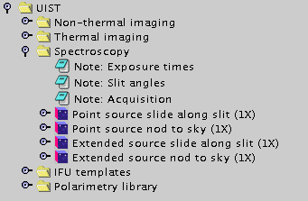
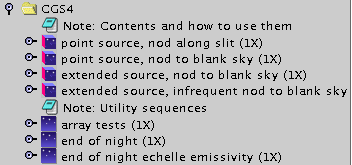

| TEMPLATE LIBRARIES | |
 |
| Each template library (the one above is the UIST
library) contains itemized folders of template MSBs. Click on the
lever next to a folder to open it. |
 |
| The UFTI templates expanded. Full MSBs are at
the top, and utility sequences are at the bottom. You will not need to
include utility sequences in your program, since they are independently
accessible through the Query Tool at the summit. (A possible
exception: if observing bright targets where persistence may be a
problem, you might want to copy "Flush Array"s in your MSBs as a
reminder to the observer.) |

|
| The UIST templates; Spectroscopy has been
expanded in the figure above. The notes at the top are informative -
make sure you read them before copying MSBs into your program. |

|
| The CGS4 templates. As with UFTI, you will not
need to include any utility sequences in your program. |
 |
| Polarimetry. In this case, skyflat utilities are
not accessible via the QT calibrations menu and should be included in
your MSBs (the MSBs presented do include them). |
 |
| Fabry-Perot. Again, the sky flat utilities will
need to be included explicitly in your program MSBs. |